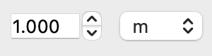

QQuantity#
A widget that allows the user to edit a quantity (a magnitude associated with a unit).
from qtpy.QtWidgets import QApplication
from superqt import QQuantity
app = QApplication([])
w = QQuantity("1m")
w.show()
app.exec()

Qt Class#
Signals#
dimensionalityChanged#
unitsChanged#
valueChanged#
Methods#
A combination QDoubleSpinBox and QComboBox for entering quantities.
For this widget, value() returns a pint.Quantity object, while setValue()
accepts either a number, pint.Quantity, a string that can be parsed by pint.
Parameters:
| Name | Type | Description | Default |
|---|---|---|---|
value |
Union[str, Quantity, Number]
|
The initial value to display. If a string, it will be parsed by |
0
|
units |
Union[UnitsContainer, str, Quantity]
|
The units to use if |
None
|
ureg |
UnitRegistry
|
The unit registry to use. If not provided, the registry will be extracted
from |
None
|
parent |
QWidget
|
The parent widget, by default None |
None
|
dimensionality() -> UnitsContainer
#
Return the current dimensionality (cast to str for nice repr).
isDimensionless() -> bool
#
Return True if the current value is dimensionless.
magnitude() -> Union[float, int]
#
Return the magnitude of the current value.
magnitudeSpinBox() -> QDoubleSpinBox
#
Return the QSpinBox widget used to edit the magnitude.
setDecimals(decimals: int) -> None
#
Set the number of decimals to display in the spinbox.
setMagnitude(magnitude: Number) -> None
#
Set the magnitude of the current value.
setUnits(units: Union[str, Unit, Quantity]) -> None
#
Set the units of the current value.
If units is None, will convert to a dimensionless quantity.
Otherwise, units must be compatible with the current dimensionality.
setValue(value: Union[str, Quantity, Number], units: Optional[Union[UnitsContainer, str, Quantity]] = None) -> None
#
Set the current value (will cast to a pint Quantity).
text() -> str
#
unitRegistry() -> UnitRegistry
#
Return the pint UnitRegistry used by this widget.
units() -> Unit
#
Return the current units.
unitsComboBox() -> QComboBox
#
Return the QCombBox widget used to edit the units.
value() -> Quantity
#
Return the current value as a pint.Quantity.